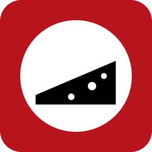
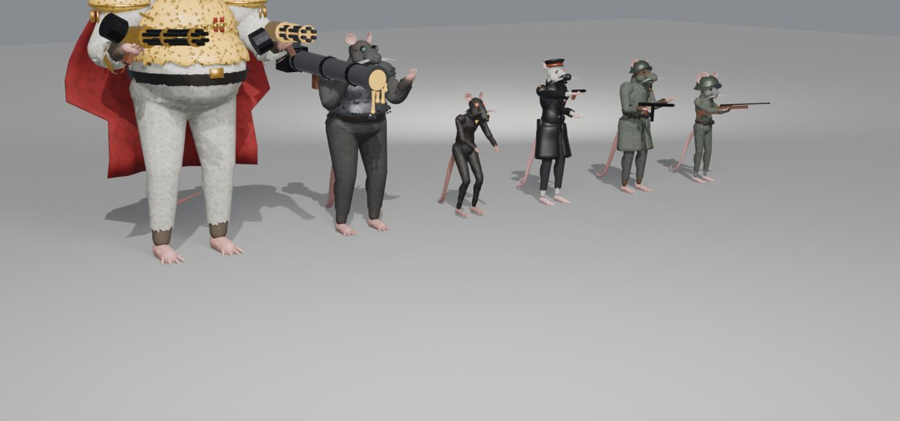
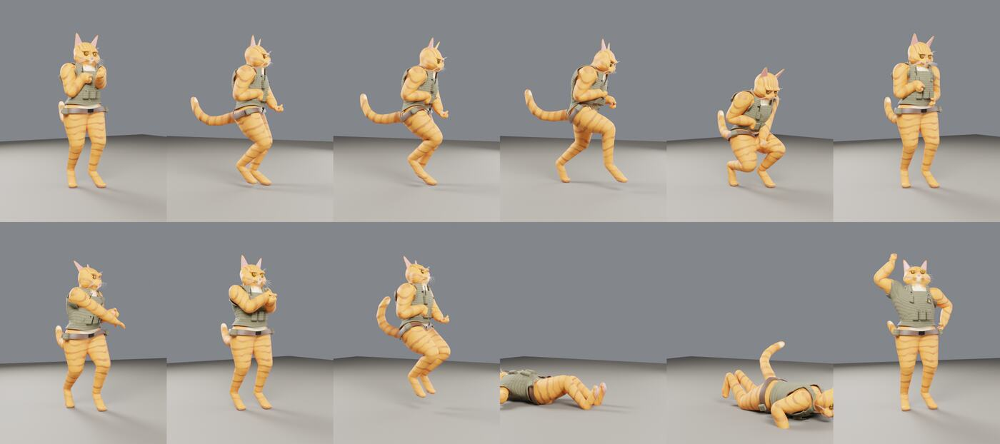
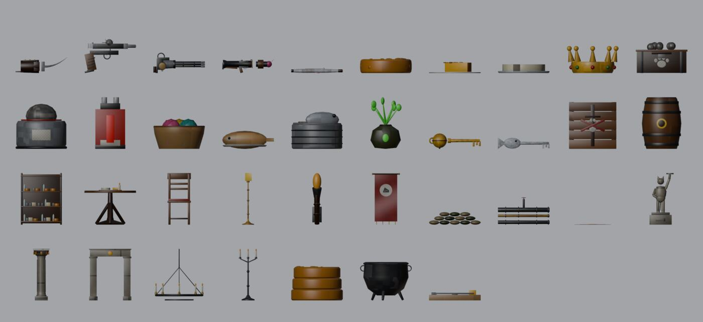

Photoreal PBR
Brick, parquet, marble, mould and molten cheese rendered with full PBR materials, SDFGI, SSR and volumetric fog. Every surface is lit like it matters.

RAT OPSOne cat. One purr-forator. A cellar full of armed rats and a very big cheese.
Brick, parquet, marble, mould and molten cheese rendered with full PBR materials, SDFGI, SSR and volumetric fog. Every surface is lit like it matters.
Real-time shell-rendered fur on the cat and the rats, with lighting and silhouette fuzz. Plus subsurface cheese that glows.
From The Cheese Cellar to the Throne of the Big Cheese: cellar, barracks, fondue works, moonlit mirror hall, blue vault and the boss arena.
Mouse gunners, storm troopers, officers, sewer biters, cheese-lobbing panzer rats and a multi-phase boss, each with its own AI, cover and voice.
Layered industrial techno-metal that ramps with combat, plus aggressive character voices and positional gunfire, all generated.
Third-person over-the-shoulder aiming with recoil, spread, ADS, reloads, headshots (x2.5) and distance falloff. Hitscan, projectile and beam weapons.
Straight out of the engine. Click to enlarge, arrow keys to browse.
Stats come straight from game/data/enemies.json.

Mouse gunner
Trooper
Officer
Sewer rat
Panzer
Boss, two phases
Melee
10-26 damage, 2 m reach, a swipe every 0.34 s. Free and silent.
Hitscan
9-24 damage, 12-round magazine, accurate and quick to reload.
Gatling
8-19 damage at ~10 rounds a second, 60-round drum. Hold the trigger.
Projectile
Lobs yarn bombs: a projectile weapon with splash damage.
Beam
The red dot. Beam weapon with 64 m reach. No cat can resist it.
KÄSEKRIEG: RAT OPS was built by a swarm of AI agents, each owning one slice of the game: engine core, player controller, enemy AI, level builder, shaders and materials, Blender character models, audio, QA bot play-testing and packaging. A lead agent integrated their work, and every agent left a report behind.
The game runs on Godot 4 (GDScript, Vulkan/Metal). Models, rigs, animation clips and even the 3D-print exports are generated procedurally in Blender by scripts, textures are PBR sets fetched and trimmed for size, and the music and voices are generated in code.


The characters, weapons, props and whole level dioramas export as printable OBJ and STL models. Contact sheets below; files and settings are in the repo.
Pick your platform. Builds are unsigned (see the install notes), roughly 180-220 MB each. Version 0.1.0.
Unzip and run install.cmd.
Copy the app to Applications first.
All files are on the latest release page. Checksums are in SHA256SUMS.
Detects your system, downloads from the latest release, verifies the SHA-256 and installs per user. No sudo, no admin. Add --dry-run to preview.
curl -fsSL https://bsommers.github.io/callofcheeseduty-ratops/install.sh | shUninstall: ... | sh -s -- --uninstall. Prefer to read it first? install.sh
irm https://bsommers.github.io/callofcheeseduty-ratops/install.ps1 | iexRead it first: install.ps1. The bundled installer is per user; no admin needed.
Run the installer script (sh kasekrieg-ratops-0.1.0-linux-x86_64-install.sh), or unpack the tarball and run kasekrieg-ratops.sh, or sudo apt install ./kasekrieg-ratops_0.1.0_amd64.deb (sudo is only needed for the .deb, which installs system-wide). Needs a Vulkan-capable GPU and driver. Remove with --uninstall.
Unzip and run install.cmd (per user, no admin; install.ps1 -AllUsers for Program Files). SmartScreen warns because the exe is unsigned: click More info, then Run anyway. Uninstall from Apps & Features or uninstall.ps1; saves are kept.
Open the dmg and copy the app to Applications (do not run it from the dmg). Gatekeeper blocks unsigned apps. Either run xattr -dr com.apple.quarantine "/Applications/KÄSEKRIEG- RAT OPS.app", or right-click the app, Open, Open. On macOS 15+: open once, then System Settings, Privacy & Security, Open Anyway.
sha256sum -c SHA256SUMSOn macOS use shasum -a 256 -c SHA256SUMS. Expected for 0.1.0:
| kasekrieg-ratops-0.1.0-linux-x86_64.tar.gz | 6ce79d356aa07f522381e953b6f33dcf6b7b163be884bec4452cbe1519edbb20 |
|---|---|
| kasekrieg-ratops_0.1.0_amd64.deb | ccc2b042f7c5e2c57ee6faaf47669fdb19ab2e464fdd2cc65be776080419bd7d |
| kasekrieg-ratops-0.1.0-linux-x86_64-install.sh | 02c08dd3ad708fa156774df1fe6f555fc14799a83ecca76530167927c5406107 |
| KasekriegRatOps-windows-x64-setup.zip | 1e25f40b1092b358941b4bd25d6b8a556b93e57f03ed75b446b9e4015523b7ae |
| KasekriegRatOps-macos.dmg | 265a9e16e632a7495d8114aab86132c785d5ef6d265fa9820584bb440561ea7b |
Known issues and release notes: RELEASE-NOTES.md. Expect a hard game.